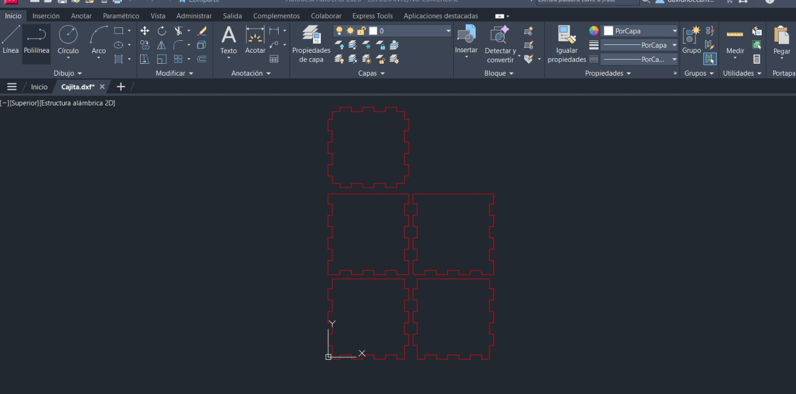
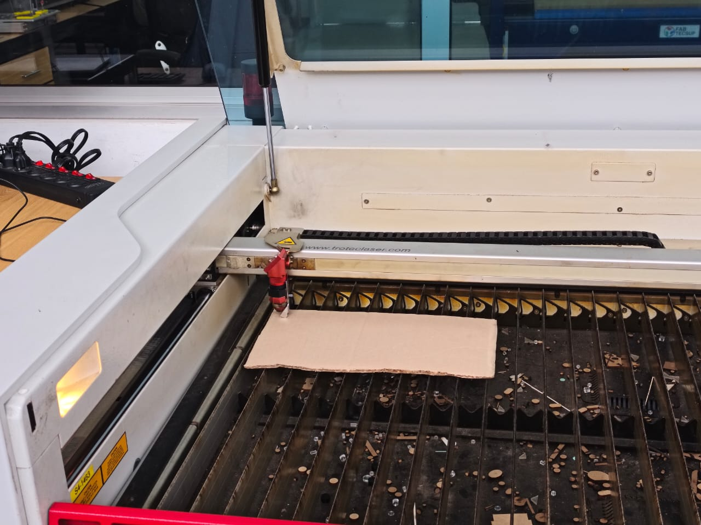
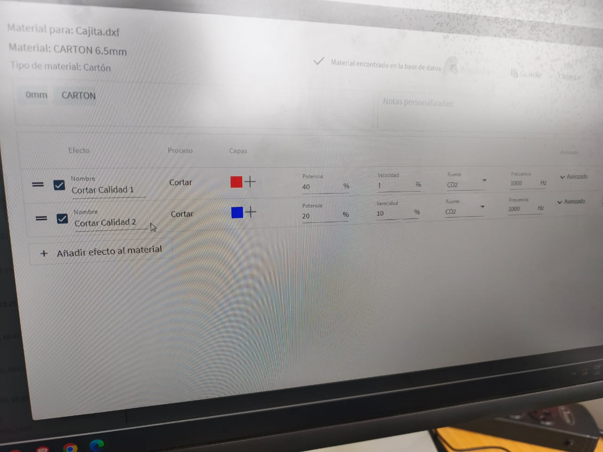
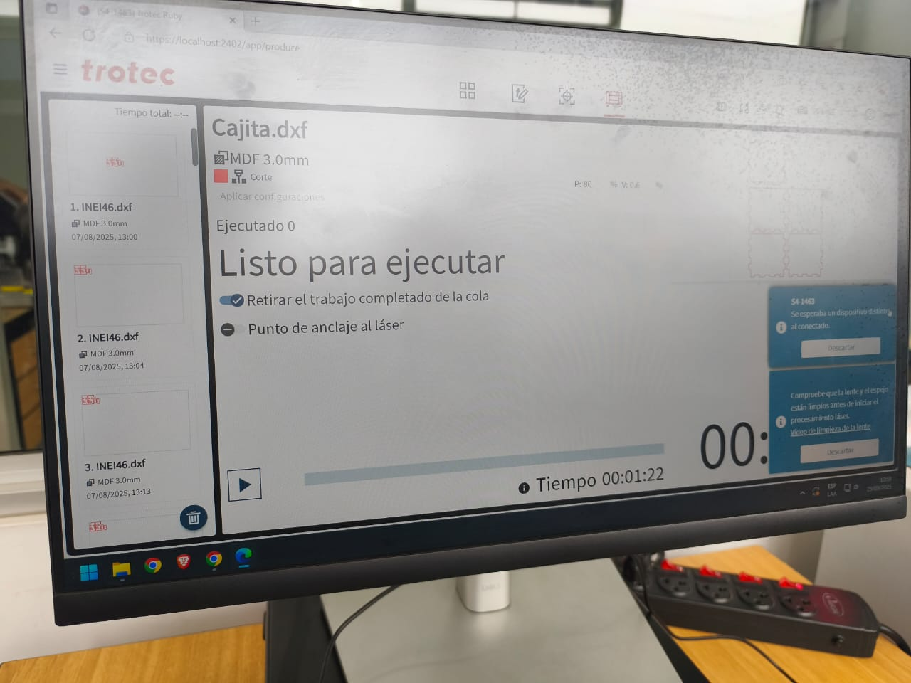
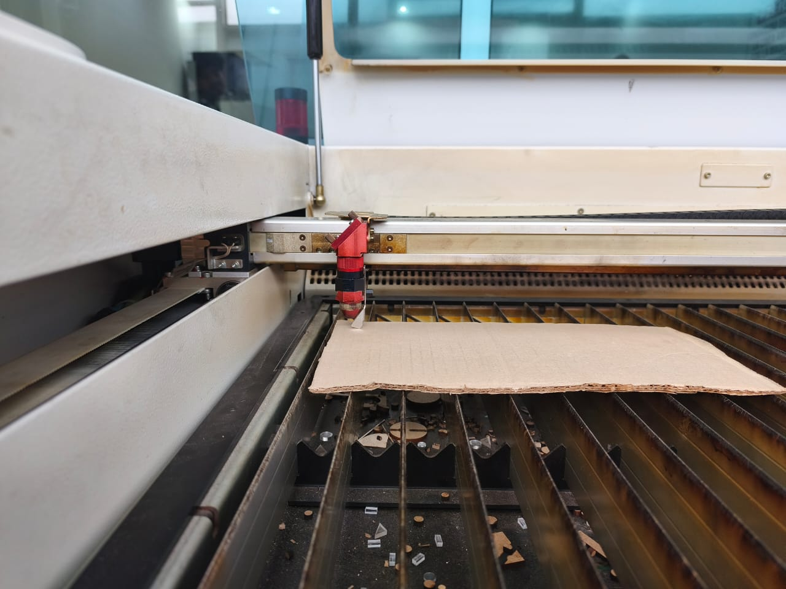
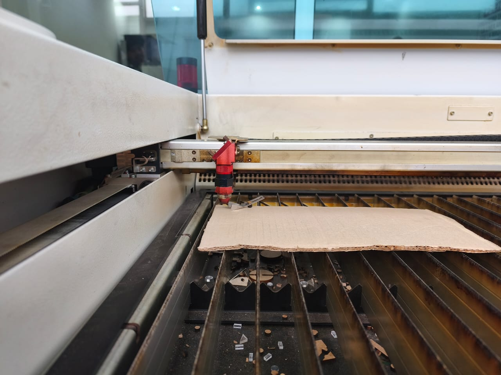
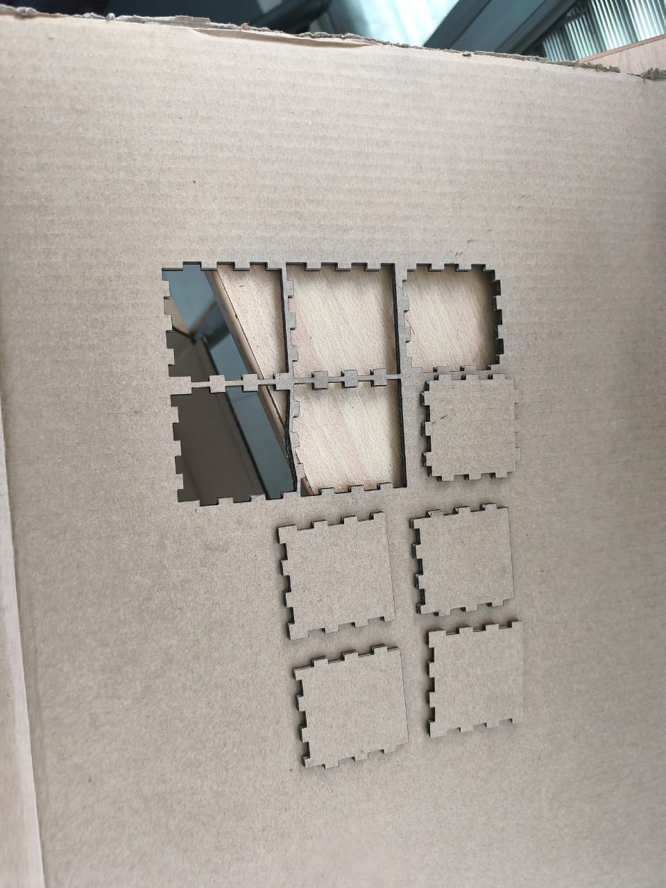
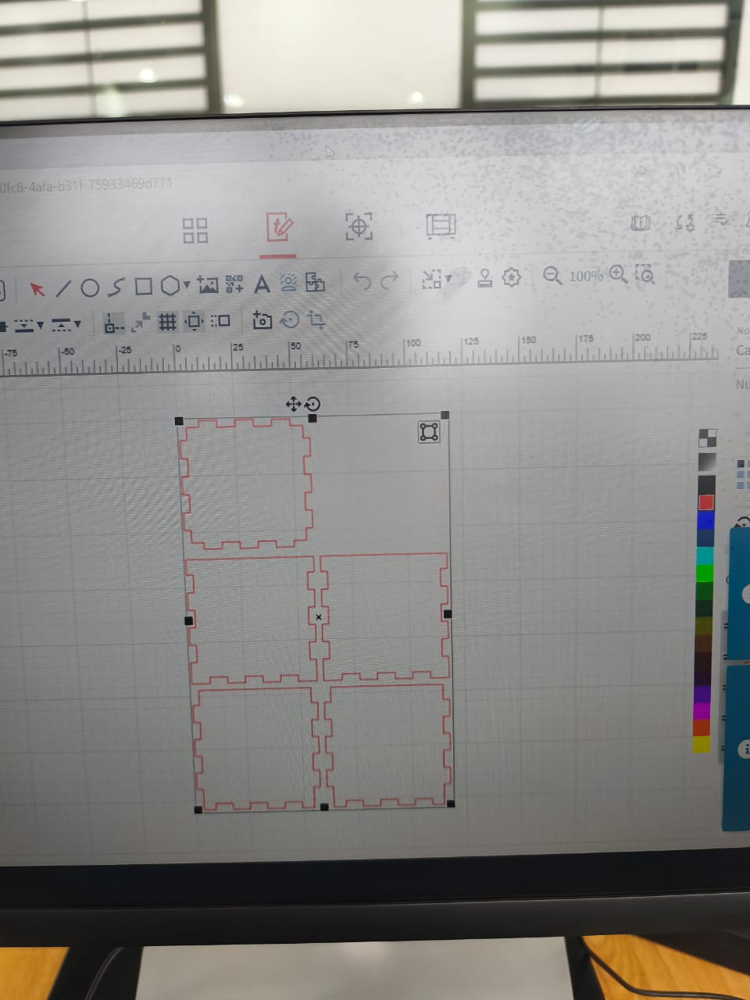
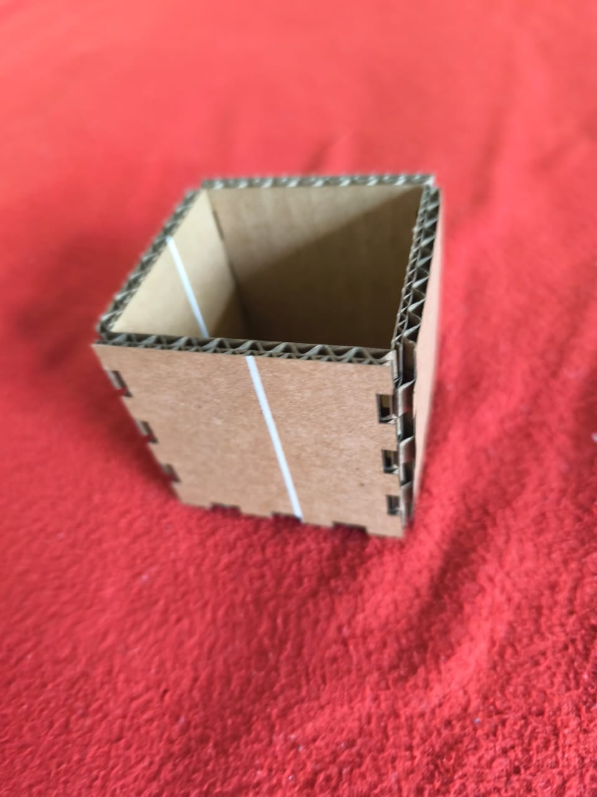

Introducción al Proceso
Fabricación digital con precisión milimétrica
El corte láser es una tecnología de fabricación digital que nos permite crear piezas precisas y complejas para nuestro espaldar ergonómico. Este proceso garantiza la exactitud dimensional y la repetibilidad necesaria para un producto de alta calidad.
Proceso en Acción
Video del corte láser en tiempo real
Especificaciones Técnicas
Potencia del Láser
80W CO₂ láser de alta precisión
Precisión
±0.1mm de tolerancia dimensional
Velocidad
500mm/s velocidad de corte
Material
Acrílico 3mm + MDF 5mm
Herramientas y Software Utilizados
AutoCAD / Fusion 360
Adobe Illustrator
RDWorks / LightBurn
Cortadora Láser CO₂
Proceso Paso a Paso
Diseño Digital
Creación del modelo 3D y exportación de los planos de corte en formato vectorial. Se definen las dimensiones exactas y las líneas de corte.
- Modelado en CAD
- Exportación a .DXF o .SVG
- Verificación de medidas

Preparación del Material
Selección y preparación del material base. Limpieza de la superficie y fijación en la plataforma de la cortadora láser.
- Verificación del material
- Limpieza de superficie
- Fijación y nivelación

Configuración de Parámetros
Ajuste de la potencia, velocidad y frecuencia del láser según el tipo y grosor del material a cortar.
- Potencia: 70-80%
- Velocidad: 450-500mm/s
- Enfoque del láser

Proceso de Corte
Ejecución del corte láser. El haz láser sigue las trayectorias programadas con precisión milimétrica, vaporizando el material.
- Corte automático
- Supervisión constante
- Control de temperatura

Post-Procesamiento
Limpieza de las piezas cortadas, remoción de residuos y verificación de las dimensiones finales.
- Limpieza de bordes
- Verificación dimensional
- Control de calidad

Antes y Después


Galería del Proceso
Explora cada detalle del corte láser




Resultados y Conclusiones
Logros Obtenidos
- Precisión dimensional de ±0.1mm en todas las piezas
- Bordes limpios sin necesidad de acabado adicional
- Tiempo de producción reducido en 60% vs métodos tradicionales
- Repetibilidad perfecta para producción en serie
- Desperdicio de material minimizado al 5%
Conclusión: El corte láser demostró ser la tecnología ideal para fabricar las piezas de nuestro espaldar ergonómico, ofreciendo precisión, velocidad y eficiencia superiores a métodos convencionales.